Q1)
↣ Gross Examination: This involves looking at the organ with your naked eyezs and identifying hat organ it is and what is wrong with it. You comment on the shape, size, consistency and color.
↣ Microscopic Examination utilizies the microscope, primarily the light microscopes like the Bright field/Dark field. to enyance the vizibility of the specimen scientits stain it using different methods such as the common H&E or something as complicated as the Histochemicak stains like the Congo Red, Gram stain, Prussian blue, Acid-fast staining. Stains are utilize the Ag-Ab complex can also be emplyed, things like the Prostate Specific Antigen and Desmin
↣ Ancillary techniques like the use of the ImmunoFlourence Microscopes and Electron Microscopes helps us study pathology and a deeper level than the light miscroscopes.
↣ For a nuclear view of the pathology we employ techniques like the PCR and the blottings (western and soouthern)
Q2)
Depending on severity of stimulus, cells may adapt, undergo injury or die
↣ Oxygen deprivation (Hypoxia, celled ischaemia)
↣Physical agents – trauma, temperature extremes, electric shock, radiation
↣ Chemical agents and drugs
↣Infectious agents – bacteria, fungi, viruses e.t.c
↣Immunologic reactions – e.g. anaphylactic reaction
↣Genetic derangements – e.g. sickle cell anaemia
↣Nutritional imbalance – Vitamin or protein deficiency
In this type of necrosis, enzymes are activated first and they start to degrade the protins structure of the tissues before the tissues can degrade. This leads to the tissue appearing as a fluid mass. It loses its architecture and rigidity and becomes friable and soft. The best examples of liquifactive necrosis are abcess formations
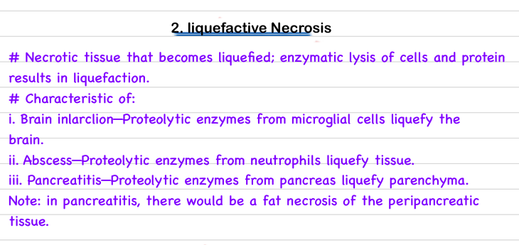
Q1)
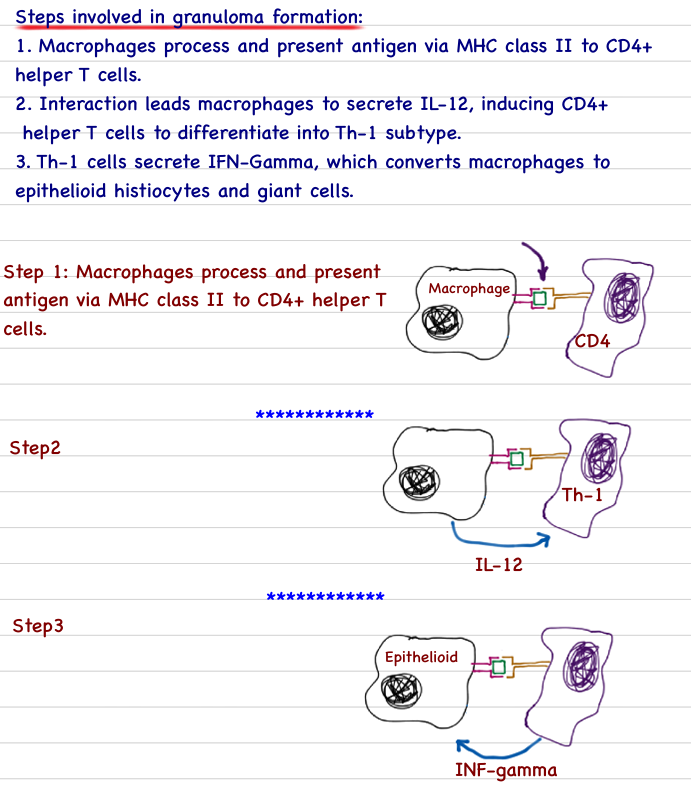
Q2)
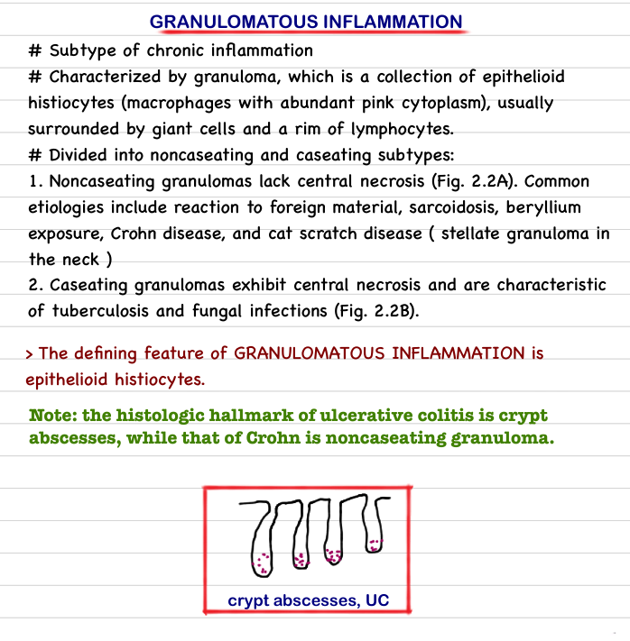
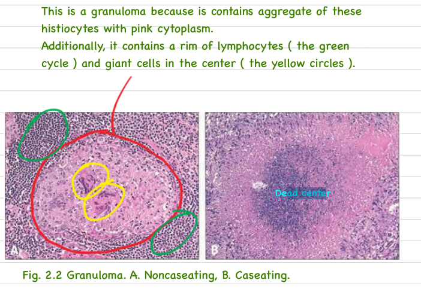
Q3)
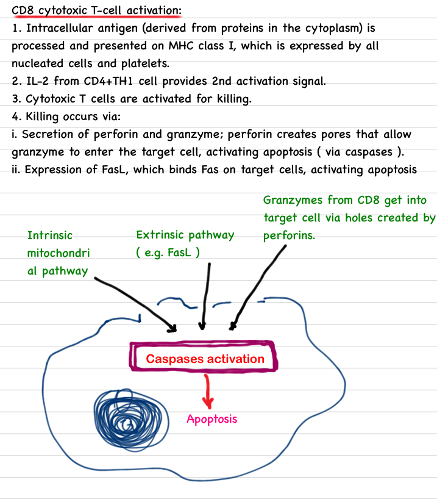
Q1)
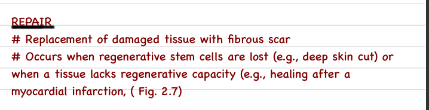
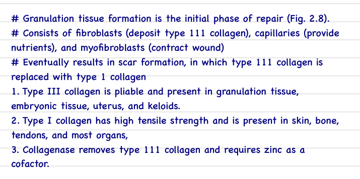
Q2)
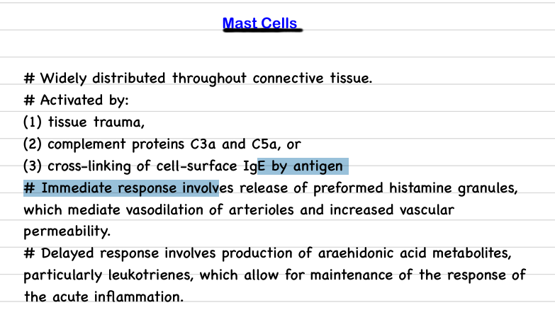
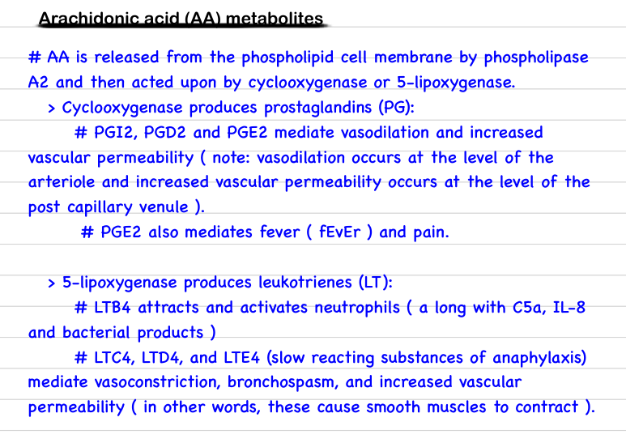
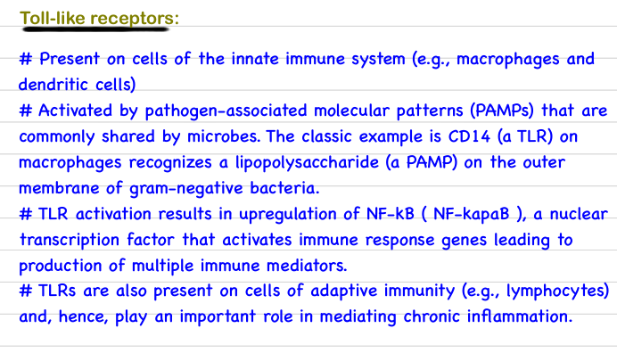
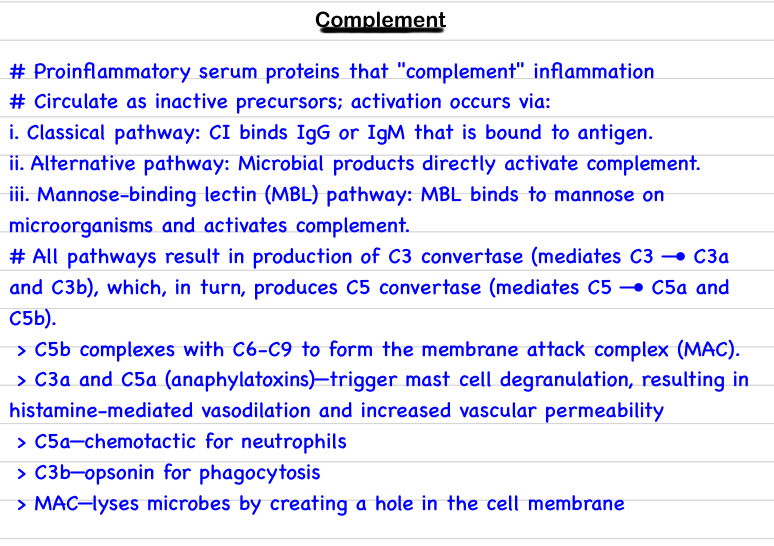
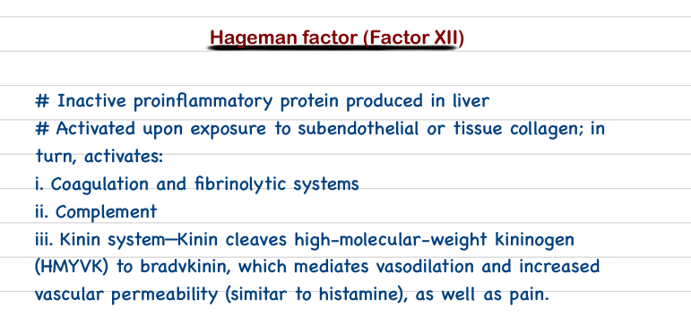
1) The Degeneration my dear Beloved are those things that are left once a cell undergoes cell injury, they are more like remnants or scars of the cell due to the injury.
2)
a Depletion of ATP; an Injurious agent targets the aerobic Respiration of the cell and the cells diverts to anearobic Respiration where we have few ATp being Produced and Lactic Acid Being produced.
b Mitochondrial Damage; When we have low ATP in the cell there will be disfunction of the Ca2+ Pumps together with the ROS and Oxygen Deprovation contributes to the Mitochondrial Damage.
c Free Radicles; these guys are particles that have a single unpaired electron in their outermost orbit, this means that for them to be stable they will try and get electrons from other things in the cell such the proteins, lipids and other structural components of the cell. making them lose they normal structure.
d DNA Damage; From Lactic Acid Accumulation and Ruptring of the Lysosomes
e Defects in Membrane Permability; Failure of the Na+/K+ Pump leads to swelling of the cells and its organelles, when the lysosomes rupture they releas enzymes that break down the plasma membrane.
f Influx of Ca2+; Mitochondrial Damage leads to Ca2+ damage as the mitochondrial stores some Ca, also rupturing of other organelles such as the Sarcoplasmic Reticulum.
Q1)
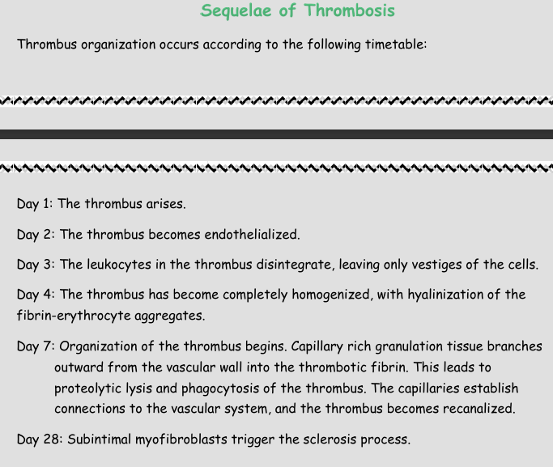